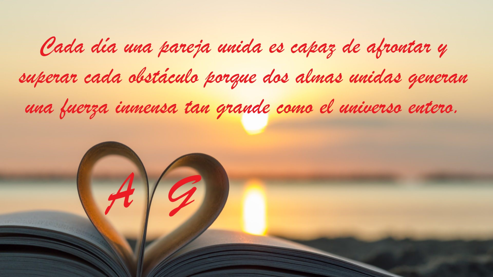

Querida amor de mi vida,
felices 3 años y 7 meses junto a ti que cada día eres mi compañero de vida que me comprende a plenitud y sabe hacerme sentir bien y llena mi corazón de felicidad y amor empezando cada mañana que me haces empezar el día admirando tu dulce sonrisa que como un rayo de sol ilumina mi día dispuesto a empezar juntos una nueva aventura que se sume al libro infinito de nuestra vida y nuestros recuerdos que cada día guardamos en lo profundo de nuestros corazones haciendo crecer nuestro amor fortaleciéndolo junto a nuestro preciado amor. Quiero decirte gracias por existir amor de mi vida desde el fondo de mi corazón tú que eres cada día la persona más extraordinaria y única en todo el universo gracias por todo lo precioso que has hecho y sigues haciendo por mí por cómo solo y solo tú sabes cómo borrar todas las cosas negativas en mí empezando por el estrés de mi trabajo y cada momento triste haciéndome sentir bien de inmediato con el deseo de abrazarte fuerte y protegerte lejos de todo mal amor de mi vida porque cada día te mereces solo y solo todas las cosas bellas que la vida tiene para ofrecer porque cada día eres la persona más extraordinaria, sabia y única en todo el universo! Gracias por cada uno e infinito abrazo tuyo el lugar más hermoso y único del planeta donde me siento seguro y lejos de todo mal y donde cada día como un niño amo cerrar suavemente mis ojos mientras la melodía de tu dulce voz como por arte de magia me hace relajarme abandonándome por completo en tus brazos mientras mi alma habita en tu dulce y precioso corazón que unido a tu alma formamos una sola persona. Gracias por cada dulce y delicado beso que me mantiene viva y unida a tu infinito amor me das una energía infinita que me hace tocar el cielo y una felicidad indescriptible que me hace empezar un nuevo día juntas creando juntas una fuerza indescriptible que no me hace temer a nada y juntas podremos luchar y ganar cada uno de los retos que nos encontraremos enfrentando en el camino de nuestra vida que unidos fuertemente en nuestros brazos podremos superar y ganar porque como tu me enseñas cada día nunca debemos detenernos y luchar juntas sin parar nunca y tu me enseñas esto cada día y estoy orgullosa de ti amor de mi vida por como con tu increíble fuerza has podido superar este primer ciclo de exámenes de este mes y por como cada día le pones pasión y amor a afrontar cada reto y estoy feliz amor de mi vida porque cada día eres la numero uno en todo el universo y tienes que seguir así cada día porque todo lo que enfrentas o haces viene de tu corazón y solo tu sabes como hacerlo único y recuerda que aun cuando haya esos momentos que parezcan imposibles de superar cierra tus ojos y escucha a tu corazón y yo estaré aquí a tu lado amor de mi vida en el fondo de tu corazón y de cada situación saldremos juntos porque como tu me enseñas cada día para todo hay solución! ¡Gracias por ser la Estrella del Norte que guía mi vida y que como punto de referencia nunca me deja perderme, atesorando cada una de tus sabias y preciosas enseñanzas que atesoro cada día y aprendo cosas nuevas y extraordinarias que juntos aprendemos, fortaleciendo nuestro vínculo infinito que cada día crece hacia el infinito y más allá! Te amo inmensamente desde lo más profundo de mi corazón que cada día lo alimentas con todo tu preciado amor y existe aquí para ti para amarte desde lo más profundo y protegerte dándote cada día todo el amor que puede ofrecerte con cada latido dando la bienvenida cada día a tu dulce y preciosa alma. Te amo infinitamente desde lo más profundo de mi mente donde cada día y cada noche eres el sueño más hermoso y único que quiero vivir en lo más profundo de mi vida y más allá! Te amo ilimitadamente, tú que eres el motor que alimenta mi corazón cada día y me mantiene vivo, tú que eres más importante que el oxígeno que respiro, tú que eres cada molécula de mi cuerpo y mi alma, tú que eres la estrella que guía mi vida, tú que eres mi preciosa y única reina, tú que eres mi ángel más sabio y único en todo el cielo, tú que eres mi compañera de vida, tú que eres mi súper extraordinaria y única mogliettina, tú que eres mi dulce y único pingüino, tú que eres y serás por siempre mi todo! ¡Felices 3 años y 7 meses para ti que eres y serás siempre el amor de mi vida! ¡Que Dios te bendiga cada día con nuestra maravillosa e increíble relación! Te deseo amor de la vida que este día esté lleno de paz y amor y lo pasemos de una manera extraordinaria y única como todos los días juntos! A+G+GIOAN=familia, hoy, siempre y más allá!